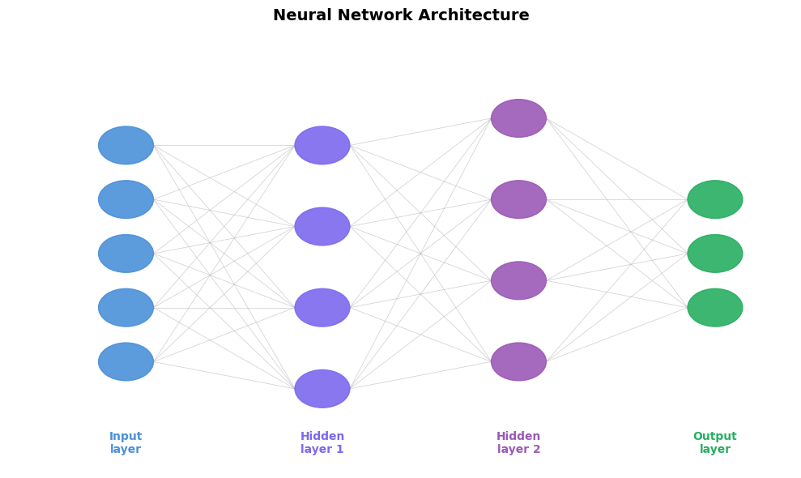
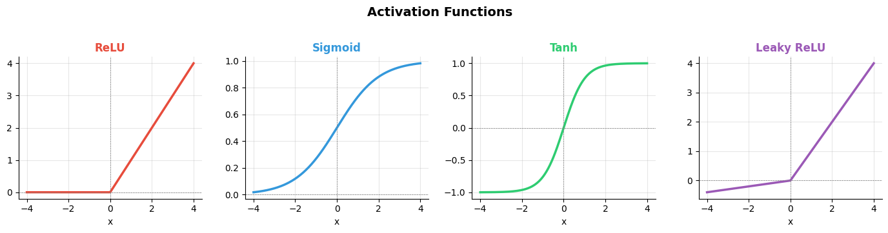
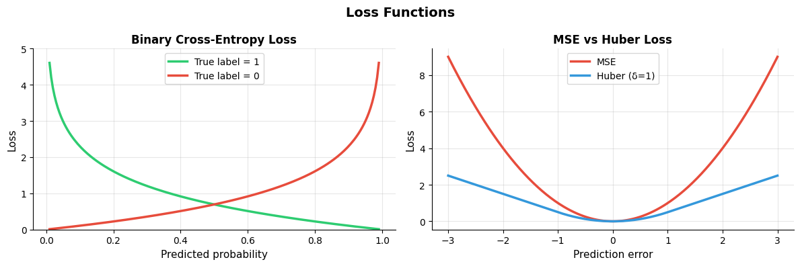
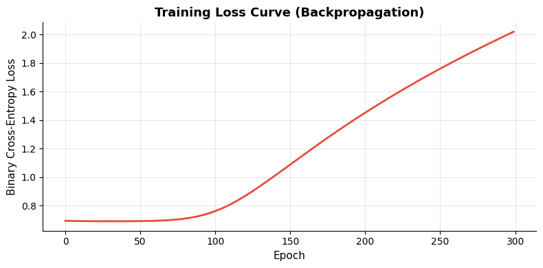

How does a neural network learn?#
Topics: Neurons · Layers · Activation Functions · Forward Pass · Loss Functions · Backpropagation · Chain Rule
1. Neurons & Layers#
What it is#
A neuron computes:
output = activation(weights · inputs + bias)Layers stack neurons — each layer transforms the representation
Input layer → hidden layers → output layer
Key intuition#
Each layer learns increasingly abstract features
Early layers: edges and patterns. Later layers: concepts and classes
More layers = more capacity to learn complex functions
Layer types#
Dense (fully connected) — every neuron connects to every neuron in next layer
Hidden layers — intermediate representations, learn features
Output layer — final prediction (sigmoid for binary, softmax for multi-class)
import numpy as np
import matplotlib.pyplot as plt
import matplotlib.patches as mpatches
from matplotlib.patches import FancyArrowPatch
# ── Neural network diagram ──
fig, ax = plt.subplots(figsize=(10, 6))
ax.set_xlim(0, 10)
ax.set_ylim(0, 8)
ax.axis('off')
ax.set_facecolor('white')
layer_configs = [
(1.5, [2, 3, 4, 5, 6], 'Input\nlayer', '#4A90D9'),
(4.0, [1.5, 3, 4.5, 6], 'Hidden\nlayer 1','#7B68EE'),
(6.5, [2, 3.5, 5, 6.5], 'Hidden\nlayer 2','#9B59B6'),
(9.0, [3, 4, 5], 'Output\nlayer', '#27AE60'),
]
node_positions = []
for x, ys, label, color in layer_configs:
positions = []
for y in ys:
circle = plt.Circle((x, y), 0.35, color=color, zorder=3, alpha=0.9)
ax.add_patch(circle)
positions.append((x, y))
node_positions.append(positions)
ax.text(x, 0.5, label, ha='center', va='center', fontsize=10,
fontweight='bold', color=color)
for i in range(len(node_positions) - 1):
for (x1, y1) in node_positions[i]:
for (x2, y2) in node_positions[i+1]:
ax.plot([x1+0.35, x2-0.35], [y1, y2],
color='#AAAAAA', linewidth=0.6, alpha=0.5, zorder=1)
ax.set_title('Neural Network Architecture', fontsize=14, fontweight='bold', pad=15)
plt.tight_layout()
plt.savefig('nn_architecture.png', dpi=120, bbox_inches='tight')
plt.show()
print("Input → Hidden layers learn representations → Output makes prediction")

Input → Hidden layers learn representations → Output makes prediction
2. Activation Functions#
What it is#
Non-linear functions applied after each neuron’s weighted sum
Without them, a deep network collapses to a single linear transformation
Common functions#
Function |
Range |
Use case |
|---|---|---|
ReLU |
[0, ∞) |
Default for hidden layers |
Sigmoid |
(0, 1) |
Binary output layer |
Tanh |
(-1, 1) |
Hidden layers (zero-centered) |
Softmax |
(0, 1) sum=1 |
Multi-class output layer |
Leaky ReLU |
(-∞, ∞) |
Fixes dying ReLU problem |
When to use#
Hidden layers → ReLU (fast, simple, works well)
Binary classification output → Sigmoid
Multi-class output → Softmax
ReLU neurons dying → Leaky ReLU or ELU
import numpy as np
import matplotlib.pyplot as plt
x = np.linspace(-4, 4, 300)
def relu(x): return np.maximum(0, x)
def sigmoid(x): return 1 / (1 + np.exp(-x))
def tanh(x): return np.tanh(x)
def leaky_relu(x): return np.where(x > 0, x, 0.1 * x)
funcs = [relu, sigmoid, tanh, leaky_relu]
names = ['ReLU', 'Sigmoid', 'Tanh', 'Leaky ReLU']
colors = ['#E74C3C', '#3498DB', '#2ECC71', '#9B59B6']
fig, axes = plt.subplots(1, 4, figsize=(14, 3.5))
for ax, f, name, color in zip(axes, funcs, names, colors):
y = f(x)
ax.plot(x, y, color=color, linewidth=2.5)
ax.axhline(0, color='gray', linewidth=0.5, linestyle='--')
ax.axvline(0, color='gray', linewidth=0.5, linestyle='--')
ax.set_title(name, fontsize=12, fontweight='bold', color=color)
ax.set_xlabel('x', fontsize=10)
ax.grid(True, alpha=0.3)
ax.spines['top'].set_visible(False)
ax.spines['right'].set_visible(False)
plt.suptitle('Activation Functions', fontsize=14, fontweight='bold', y=1.02)
plt.tight_layout()
plt.savefig('activation_functions.png', dpi=120, bbox_inches='tight')
plt.show()

Interview Q&A#
Why do we need non-linear activations?
Without them, stacking layers = one linear transformation → can’t learn complex patterns
Non-linearity gives the network capacity to approximate any function
What is the dying ReLU problem?
If a neuron always gets negative input → ReLU outputs 0 → gradient is 0 → weight never updates
Fix: Leaky ReLU (small negative slope), ELU, or careful weight initialization
Why softmax for multi-class output?
Converts raw scores (logits) to probabilities that sum to 1
Amplifies the largest value → makes confident predictions
Gotchas#
Sigmoid and tanh cause vanishing gradients in deep networks → use ReLU in hidden layers
ReLU is not zero-centered → can slow convergence (tanh is better in some cases)
Never use sigmoid/tanh in hidden layers of deep networks
3. Forward Pass#
What it is#
The process of passing input through the network layer by layer to produce a prediction
Each layer:
output = activation(W · input + b)No learning happens here — just computation
Key intuition#
Data flows forward, each layer transforms it
Final output is compared to the true label using the loss function
import numpy as np
# Simple 2-layer neural network forward pass from scratch
np.random.seed(42)
def sigmoid(x):
return 1 / (1 + np.exp(-x))
def relu(x):
return np.maximum(0, x)
def forward_pass(X, W1, b1, W2, b2):
# Layer 1
z1 = X @ W1 + b1 # linear transform
a1 = relu(z1) # activation
# Layer 2 (output)
z2 = a1 @ W2 + b2
a2 = sigmoid(z2) # sigmoid for binary output
cache = {'z1': z1, 'a1': a1, 'z2': z2, 'a2': a2, 'X': X}
return a2, cache
# Example: 3 samples, 4 features, 5 hidden neurons, 1 output
X = np.random.randn(3, 4)
W1 = np.random.randn(4, 5) * 0.1
b1 = np.zeros(5)
W2 = np.random.randn(5, 1) * 0.1
b2 = np.zeros(1)
output, cache = forward_pass(X, W1, b1, W2, b2)
print(f"Input shape : {X.shape}")
print(f"Hidden (z1) : {cache['z1'].shape}")
print(f"Hidden (a1) : {cache['a1'].shape}")
print(f"Output (a2) : {output.shape}")
print(f"Predictions : {output.ravel().round(4)}")
Input shape : (3, 4)
Hidden (z1) : (3, 5)
Hidden (a1) : (3, 5)
Output (a2) : (3, 1)
Predictions : [0.5008 0.5 0.4934]
4. Loss Functions (Deep Learning)#
What it is#
Measures the difference between predictions and true labels
The network minimizes this during training via backpropagation
Common losses#
Loss |
Task |
Notes |
|---|---|---|
Binary Cross-Entropy |
Binary classification |
Use with sigmoid output |
Categorical Cross-Entropy |
Multi-class |
Use with softmax output |
MSE |
Regression |
Sensitive to outliers |
Huber Loss |
Regression |
Robust to outliers |
Key intuition#
Cross-entropy penalizes confident wrong predictions very heavily
If model says 99% probability for wrong class → very high loss → large gradient → fast correction
import numpy as np
import matplotlib.pyplot as plt
# ── Loss functions ──
def binary_cross_entropy(y_true, y_pred, eps=1e-8):
return -np.mean(y_true * np.log(y_pred + eps) + (1 - y_true) * np.log(1 - y_pred + eps))
def mse(y_true, y_pred):
return np.mean((y_true - y_pred) ** 2)
# Visualize: BCE loss vs prediction confidence
p = np.linspace(0.01, 0.99, 200)
loss_correct = -np.log(p) # true label = 1, predicting p
loss_incorrect = -np.log(1 - p) # true label = 0, predicting p
fig, axes = plt.subplots(1, 2, figsize=(12, 4))
# BCE curve
axes[0].plot(p, loss_correct, color='#2ECC71', linewidth=2.5, label='True label = 1')
axes[0].plot(p, loss_incorrect, color='#E74C3C', linewidth=2.5, label='True label = 0')
axes[0].set_xlabel('Predicted probability', fontsize=11)
axes[0].set_ylabel('Loss', fontsize=11)
axes[0].set_title('Binary Cross-Entropy Loss', fontsize=12, fontweight='bold')
axes[0].legend(fontsize=10)
axes[0].grid(True, alpha=0.3)
axes[0].spines['top'].set_visible(False)
axes[0].spines['right'].set_visible(False)
axes[0].set_ylim(0, 5)
# MSE vs Huber
errors = np.linspace(-3, 3, 300)
mse_loss = errors ** 2
huber_loss = np.where(np.abs(errors) <= 1,
0.5 * errors**2,
np.abs(errors) - 0.5)
axes[1].plot(errors, mse_loss, color='#E74C3C', linewidth=2.5, label='MSE')
axes[1].plot(errors, huber_loss, color='#3498DB', linewidth=2.5, label='Huber (δ=1)')
axes[1].set_xlabel('Prediction error', fontsize=11)
axes[1].set_ylabel('Loss', fontsize=11)
axes[1].set_title('MSE vs Huber Loss', fontsize=12, fontweight='bold')
axes[1].legend(fontsize=10)
axes[1].grid(True, alpha=0.3)
axes[1].spines['top'].set_visible(False)
axes[1].spines['right'].set_visible(False)
plt.suptitle('Loss Functions', fontsize=14, fontweight='bold')
plt.tight_layout()
plt.savefig('loss_functions.png', dpi=120, bbox_inches='tight')
plt.show()

5. Backpropagation & Chain Rule#
What it is#
Algorithm to compute gradients of the loss with respect to every weight
Uses the chain rule of calculus to propagate gradients backward through layers
Gradients tell us how to update each weight to reduce the loss
Key intuition#
Forward pass: compute predictions and loss
Backward pass: compute how much each weight contributed to the loss
Chain rule: gradient of loss w.r.t. weight = product of gradients along the path
Chain rule#
If
L = f(g(x)), thendL/dx = dL/df · df/dg · dg/dxIn a network:
dL/dW1 = dL/da2 · da2/dz2 · dz2/da1 · da1/dz1 · dz1/dW1
import numpy as np
import matplotlib.pyplot as plt
np.random.seed(42)
def sigmoid(x): return 1 / (1 + np.exp(-x))
def sigmoid_deriv(x): return sigmoid(x) * (1 - sigmoid(x))
def relu(x): return np.maximum(0, x)
def relu_deriv(x): return (x > 0).astype(float)
def forward(X, W1, b1, W2, b2):
z1 = X @ W1 + b1
a1 = relu(z1)
z2 = a1 @ W2 + b2
a2 = sigmoid(z2)
return a2, {'z1': z1, 'a1': a1, 'z2': z2, 'X': X}
def backward(y, a2, cache, W2):
m = y.shape[0]
dz2 = a2 - y.reshape(-1, 1) # dL/dz2
dW2 = (1/m) * cache['a1'].T @ dz2 # dL/dW2
db2 = (1/m) * dz2.sum(axis=0)
da1 = dz2 @ W2.T
dz1 = da1 * relu_deriv(cache['z1']) # chain rule through ReLU
dW1 = (1/m) * cache['X'].T @ dz1 # dL/dW1
db1 = (1/m) * dz1.sum(axis=0)
return {'dW1': dW1, 'db1': db1, 'dW2': dW2, 'db2': db2}
# Train a tiny network
X = np.random.randn(100, 4)
y = (X[:, 0] + X[:, 1] > 0).astype(float)
W1 = np.random.randn(4, 8) * 0.1
b1 = np.zeros(8)
W2 = np.random.randn(8, 1) * 0.1
b2 = np.zeros(1)
lr, losses = 0.1, []
for epoch in range(300):
a2, cache = forward(X, W1, b1, W2, b2)
loss = -np.mean(y * np.log(a2 + 1e-8) + (1-y) * np.log(1-a2 + 1e-8))
losses.append(loss)
grads = backward(y, a2, cache, W2)
W1 -= lr * grads['dW1']
b1 -= lr * grads['db1']
W2 -= lr * grads['dW2']
b2 -= lr * grads['db2']
# Plot loss curve
fig, ax = plt.subplots(figsize=(8, 4))
ax.plot(losses, color='#E74C3C', linewidth=2)
ax.set_xlabel('Epoch', fontsize=11)
ax.set_ylabel('Binary Cross-Entropy Loss', fontsize=11)
ax.set_title('Training Loss Curve (Backpropagation)', fontsize=13, fontweight='bold')
ax.grid(True, alpha=0.3)
ax.spines['top'].set_visible(False)
ax.spines['right'].set_visible(False)
plt.tight_layout()
plt.savefig('loss_curve.png', dpi=120, bbox_inches='tight')
plt.show()
print(f"Initial loss: {losses[0]:.4f} → Final loss: {losses[-1]:.4f}")

Initial loss: 0.6935 → Final loss: 2.0211
Interview Q&A#
What is the vanishing gradient problem?
Gradients shrink as they propagate backward through many layers
With sigmoid/tanh, gradients are always < 1 → multiplying many times → near zero
Fix: ReLU activations, residual connections, batch normalization
Why do we need the chain rule?
Loss depends on output, output depends on hidden layers, hidden layers depend on weights
Chain rule lets us decompose this compound dependency into manageable pieces
What is gradient explosion?
Gradients grow exponentially backward → weights blow up → NaN loss
Fix: gradient clipping, careful weight initialization, batch normalization
Gotchas#
Always verify gradients with numerical gradient checking when implementing from scratch
Computational graph must be retained during forward pass for backward pass
In PyTorch:
loss.backward()accumulates gradients — calloptimizer.zero_grad()before each step